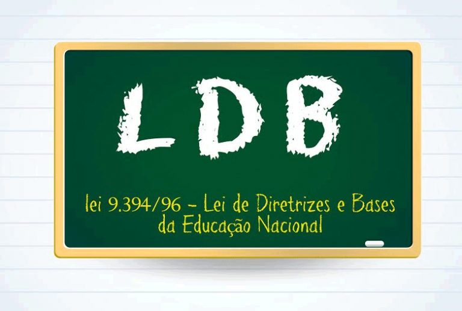

Primeiramente para saber como a educação pode transformar o mundo é necessário saber o que é a educação.
A educação é uma palavra subjetiva com um significado muito amplo, mas de modo geral ela é uma atividade multidirecional que promove habilidades, caráter e a transmissão de conhecimentos. comumente dividida em 3 tipos:
Educação formal ou tradicional: visto em Instituições tradicionais de ensino atende a LDB (Lei de Diretrizes e Bases)
Educação não formal: foge do padrão tradicional e também das exigências legais estipuladas pela LDB, exemplo: desenvolvimento pessoal, emocional e também o profissional. Um bom exemplo são os cursos de inglês realizados fora do ambiente escolar.
Educação informal ou incidental: O aprendizado por vivencia,exemplo: ler,assistir,etc...
para qualquer atividade a ser realizada pelo ser humano, o processo de compreensão e aprimoramento esta envolvido e logo o conhecimento necessários para realiza-lo. A educação esta correlacionada ao conhecimento que,é a capacidade humana de entender, apreender e compreender. logo (educação + conhecimento = Prosperidade)